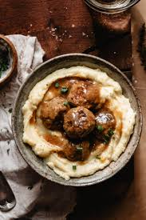

Swedish Meatballs

Description:
Swedish meatballs are a classic dish made with ground meat, breadcrumbs, and spices, served in a creamy gravy. They are often enjoyed with mashed potatoes or lingonberry sauce.
Ingredients:
- 1 lb ground beef
- 1/2 cup breadcrumbs
- 1/4 cup milk
- 1/4 cup finely chopped onion
- 1 egg
- 1/2 tsp salt
- 1/4 tsp black pepper
- 1/4 tsp ground allspice
- 1/4 tsp ground nutmeg
- 2 tbsp butter
- 2 tbsp all-purpose flour
- 2 cups beef broth
- 1/2 cup heavy cream
Steps:
- In a large mixing bowl, combine the ground beef, breadcrumbs, milk, chopped onion, egg, salt, pepper, allspice, and nutmeg. Mix until well combined.
- Shape the mixture into small meatballs, about 1 inch in diameter.
- In a large skillet, melt the butter over medium heat. Add the meatballs and cook until browned on all sides, about 5-7 minutes. Remove the meatballs from the skillet and set aside.
- In the same skillet, whisk in the flour and cook for 1-2 minutes until it turns golden brown. Gradually whisk in the beef broth and heavy cream, stirring constantly until the sauce thickens.
- Return the meatballs to the skillet and simmer in the sauce for an additional 10-15 minutes, or until the meatballs are cooked through and the sauce is flavorful.
Back to Home